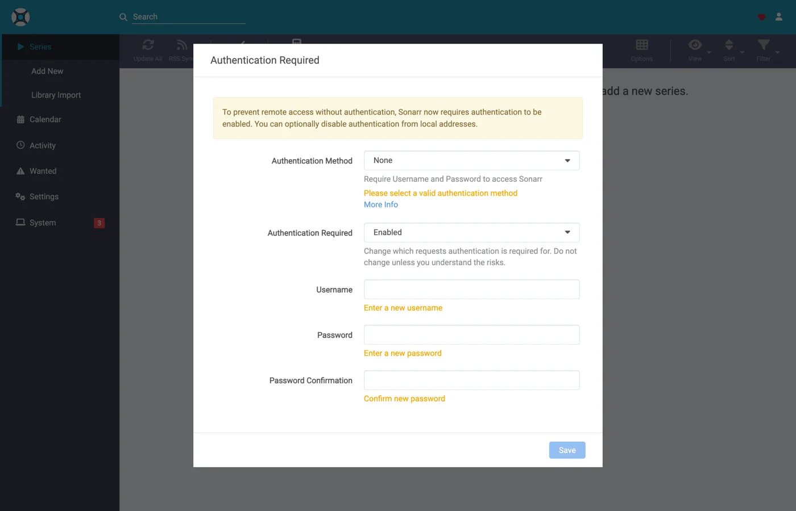
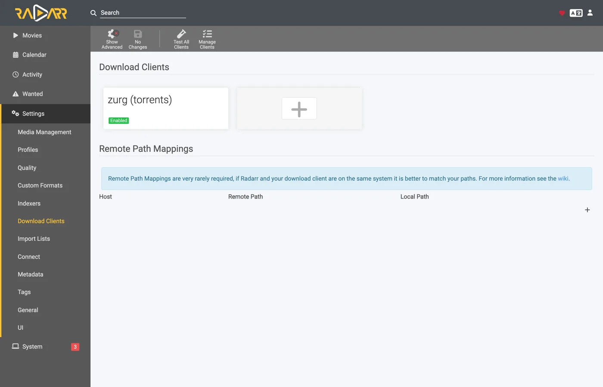
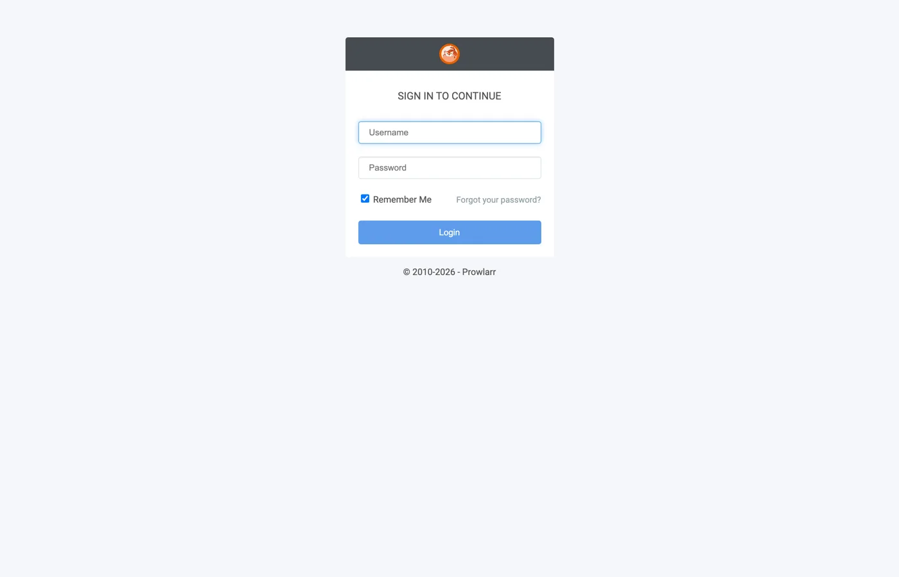
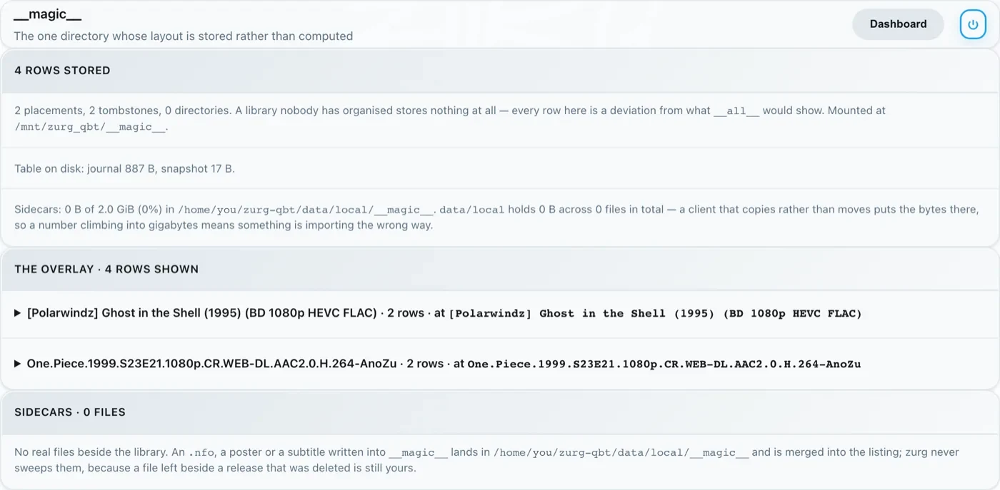

Sonarr dan Radarr dengan torrent, langkah demi langkah
Ada tiga cara memakai Sonarr dan Radarr dengan zurg. Pilihan utamanya adalah siapa yang mencari, zurg atau *arrs: pilih yang mana membandingkan keduanya.
Dua yang pertama bisa jalan berdampingan. Keduanya memakai folder __magic__ yang sama.
Panduan sebelumnya mengarahkan *arrs ke zurg untuk Usenet, dengan zurg menjawab sebagai SABnzbd. Ini adalah separuh lainnya: zurg menjawab sebagai qBittorrent, *arrs memberinya magnet atau .torrent alih-alih NZB, dan rilisnya masuk ke akun debrid, bukan ke news server. Proses import-nya sama — cukup rename di dalam __magic__, tidak ada yang diunduh untuk diimpor, dan tidak ada yang disalin.
Mana dari keduanya yang dikirim *arr itu bukan hal sepele. .torrent biasanya diunggah ke akun sebagai file itu sendiri; hanya magnet yang ditambahkan hanya dengan info hash. Dalam mode cached-only, yang menjadi default, TorBox dan Debrid-Link justru menerima info hash, karena begitulah cara mereka menolak rilis yang belum ter-cache tanpa menambahkannya. Magnet membuat akun mencari tahu isi torrent dari hash-nya, dan hash dari private tracker tidak punya swarm publik untuk dipakai mencari tahu itu. Real-Debrid gagal dengan magnet_error tanpa file, dan TorBox menerimanya lalu diam di checking tanpa daftar file, tanpa ukuran, dan dengan estimasi seratus hari, jadi grab-nya tidak gagal dan tidak selesai. File .torrent langsung mencocokkan cache akun berdasarkan hash, jadi konten yang sudah dimiliki akun langsung ditambahkan tanpa resolusi magnet sama sekali. Inilah yang membuat private indexer bisa dipakai di sini: rilisnya hanya bisa ditambahkan kalau akun sudah memiliki kontennya, dan untuk apa pun yang dibagikan komunitas, itu kasus yang paling umum. Arahkan *arr ke indexer yang memberikan file .torrent, bukan magnet — private indexer biasanya begitu.
Semua di bawah ini diambil dengan zurg 2026.08.30.0459-nightly-73-g5b4c9790, Sonarr 4.0.19.2979, Radarr 6.3.0.10514, dan Prowlarr 2.5.2.5491, pada instalasi langsung dengan akun AllDebrid asli. Nama host dan user sudah diganti menjadi you@zurg-server. Nama indexer ditulis my-indexer. API key dan jumlah library hanya contoh. Tidak ada bagian lain dari output yang diambil yang diubah.
Sebelum kamu mulai
Tiga hal ini harus benar. Cek sekarang semuanya, karena kalau salah, setiap kegagalannya nanti akan terlihat seperti masalah lain.
- zurg punya akun yang bisa menambahkan torrent: Real-Debrid, AllDebrid, TorBox, Premiumize, Debrid-Link, atau Offcloud. Semua enam menerima file
.torrentyang diunggah langsung, dan inilah yang membuat rilis dari private tracker bisa ditambahkan. Akun Usenet tidak menerima torrent dalam bentuk apa pun. Instalasi yang hanya punya providernzbakan menerima setiap grab, lalu menolaknya. zurg akan memberi tahu hal ini saat startup. magic.enabledbernilaitrue. Tanpa ini, path penyimpanan tidak ada dan setiap impor akan gagal. Lihat__magic__.- Mount terlihat oleh *arr di path yang dilaporkan zurg. Kalau *arr berjalan di dalam container, baca
langkah 8 sebelum mengatur apa pun. Kalau dipasang sebagai aplikasi biasa di mesin yang sama, ia melihat mount di tempat zurg memasangnya, dengan satu catatan untuk tiap sistem:- Linux: *arr yang berjalan sebagai user berbeda dari zurg akan melihat folder kosong sampai
user_allow_otherdiaktifkan. Lihat Pengaturan Linux. - macOS: jalankan sebagai user yang sama dengan zurg. Mount-nya ada di
/Volumes/Zurgkecuali kamu mengubahmount_path. - Windows: jalankan Sonarr dan Radarr sebagai aplikasi tray, seperti yang ditawarkan installer-nya, bukan sebagai layanan Windows. Drive
Z:milik zurg hanya ada di sesi tempat kamu login, dan layanan berjalan di luar sesi itu, jadi layanan tidak akan melihat drive tersebut. Lihat aturan sesi.
- Linux: *arr yang berjalan sebagai user berbeda dari zurg akan melihat folder kosong sampai
Cek dua poin pertama langsung dari file config, di working directory zurg. Di Windows, buka config.yml dengan Notepad.
$ grep -A3 '^providers:' config.yml
providers:
- type: alldebrid
token: <redacted>
$ grep -A3 '^magic:' config.yml
magic:
enabled: true
allow_delete: falseUrutan daftar providers: itu penting di sini. Sebuah grab ditawarkan ke setiap akun yang menerima torrent, sesuai urutan itu. Kalau sebuah akun menolak atau macet menanganinya, akun itu ditinggalkan dan akun berikutnya dicoba. Kalau kamu punya dua akun, taruh akun yang ingin kamu pakai lebih dulu di posisi pertama.
Ada dua key yang bisa mengeluarkan akun dari urutan itu. watchlist: true membuat satu akun didahulukan di mana pun posisinya dalam file. add_torrents: false mengeluarkan akun dari rotasi sama sekali, jadi akun itu tetap melayani dan membaca librarynya, tetapi tidak ada torrent baru yang ditaruh di sana. Ini cocok untuk akun arsip, atau akun yang kuotanya sudah dipakai untuk hal lain. Akun Usenet tidak pernah ditawari torrent dengan cara apa pun. Kedua key ini dijelaskan di referensi konfigurasi.
1. Nyalakan endpoint-nya
Dua cara, hasilnya sama. Keduanya menulis ke config.yml dan keduanya perlu di-restart: rute yang melayani __magic__ dan endpoint qBittorrent didaftarkan sekali saja, saat zurg mulai.
Opsi A — dashboard
Buka dashboard zurg, klik Config, lalu scroll ke __magic__ & Download Clients. Nyalakan Serve __magic__ dan qBittorrent Endpoint.

Config adalah tempat setting ini berada; Magic adalah tempat kamu akan melihat grab yang masuk nanti.

Biarkan qBittorrent Save Path kosong kecuali *arr kamu me-mount zurg di lokasi yang berbeda dari tempat zurg sendiri — lihat
Opsi B — config.yml
Tambahkan blok itu secara manual lalu restart zurg.
magic:
enabled: true
qbittorrent:
enabled: true
api_key: "" # empty = zurg generates one and keeps it
categories: [tv-sonarr, radarr]
save_path: "" # empty = <mount_path>/__magic__/__all__
cached_only: true # the default: only take what an account already holdsKategori bukan folder. Semuanya mengarah ke tempat yang sama, yaitu folder rilis itu sendiri di bawah __magic__/__all__. Daftar ini hanya membuat kategori di muka: Test dari klien akan membuat kategori apa pun yang belum ada, dan zurg menyimpannya di data/qbittorrent-categories.json. Prowlarr, kalau kamu pakai, butuh prowlarr. Lihat
Restart zurg, lalu pastikan endpoint sudah terdaftar dan provider-nya berhasil:

Satu baris alldebrid saja sudah cukup untuk endpoint, yang mana pun dari enam tipe yang mendukung torrent.
Log saat startup juga menyampaikan hal yang sama, dan ada baiknya kamu baca sekali:
INFO router.qbittorrent qBittorrent API on /api/v2 and /qbittorrent/api/v2, save path /mnt/zurg_qbt/__magic__/__all__, categories tv-sonarr, radarr
INFO router.qbittorrent qBittorrent: cached-only, so a grab is only accepted onto an account that already holds the content; anything else is refused and the *arr takes its next release. Set qbittorrent.cached_only: false to let accounts download
INFO router.qbittorrent qBittorrent: torrents are offered to alldebrid, in that order2. Cari API key-nya
Kunci API adalah satu-satunya autentikasi di endpoint ini, jadi pastikan kamu mengaturnya dengan benar sejak awal dan jangan pernah menempelkannya di tempat publik.
Kalau kamu mengosongkan api_key, zurg akan membuatnya sendiri saat pertama kali dijalankan dan menyimpannya di data/qbittorrent-apikey:
$ cat data/qbittorrent-apikey
fedcba9876543210fedcba9876543210
Contoh kunci saja, kunci kamu pasti berbeda. File ini tetap ada setelah restart, jadi kuncinya tidak berubah setelah dibuat.
Kalau kamu mengisi api_key sendiri, kunci tersebut ada di config.yml dan tidak ada file yang dibuat.
Endpoint ini berada di luar autentikasi basic zurg. Para *arrs melakukan autentikasi ke download client dengan cara milik download client itu sendiri. Lapisan HTTP mereka mengubah respons 401 dari basic auth menjadi "unable to connect" tanpa petunjuk yang bisa ditindaklanjuti. Karena itu zurg sengaja mengecualikan /api/v2. Kunci API adalah satu-satunya penjaga. Perlakukan port ini sama seperti bagian zurg lainnya: gunakan di jaringan tepercaya, atau letakkan di belakang sesuatu yang melindunginya.
Ada tiga cara untuk mengirim kunci, dan ketiganya diterima:
Authorization: Bearer <key>: ini yang dikirim client saat kolom API Key-nya sudah diisi. Ini yang direkomendasikan karena kamu tidak perlu login sama sekali.- Kunci sebagai password di
auth/login, dengan username apa saja. Pakai ini kalau kamu lebih suka mengisi kolom Username dan Password. - Username dan password dashboard zurg sendiri, kalau
username:danpassword:sudah diisi diconfig.yml.
3. Pastikan ia merespons
Lakukan ini sebelum menyentuh Sonarr. Cuma sepuluh detik, dan ini memisahkan "zurg salah" dari "*arr salah" untuk sisa proses setup.
$ KEY=fedcba9876543210fedcba9876543210
$ ZURG=192.168.88.244:9995
$ curl -s "http://$ZURG/api/v2/app/webapiVersion"
Forbidden
$ curl -s -H "Authorization: Bearer $KEY" "http://$ZURG/api/v2/app/webapiVersion"
2.11.2
$ curl -s -H "Authorization: Bearer $KEY" "http://$ZURG/api/v2/app/version"
v5.0.4
$ curl -s -H "Authorization: Bearer $KEY" "http://$ZURG/api/v2/app/preferences" | jq .save_path
"/mnt/zurg_qbt/__magic__/__all__"Di PowerShell. Ketik curl.exe, bukan curl: curl di Windows PowerShell adalah perintah yang berbeda.
PS> $KEY = "fedcba9876543210fedcba9876543210"
PS> $ZURG = "192.168.88.244:9995"
PS> curl.exe -s "http://$ZURG/api/v2/app/webapiVersion"
Forbidden
PS> curl.exe -s -H "Authorization: Bearer $KEY" "http://$ZURG/api/v2/app/webapiVersion"
2.11.2
PS> curl.exe -s -H "Authorization: Bearer $KEY" "http://$ZURG/api/v2/app/version"
v5.0.4
PS> (Invoke-RestMethod "http://$ZURG/api/v2/app/preferences" -Headers @{ Authorization = "Bearer $KEY" }).save_path
Z:/__magic__/__all__Respons Forbidden polos itu tandanya sehat. Probe pertama dari client adalah GET /api/v2/app/webapiVersion yang tanpa autentikasi, dan qBittorrent asli menjawabnya dengan 403 kalau API-nya ada tapi belum ada yang login. Jadi itu yang dijawab zurg, dan client membacanya sebagai "v2 didukung, sekarang autentikasi". Kalau yang muncul malah 404 biasa, berarti qbittorrent.enabled masih false atau zurg belum di-restart setelah kamu mengubahnya.
Lalu cek bahwa key yang salah benar-benar ditolak:
$ curl -s -o /dev/null -w "%{http_code}\n" -H "Authorization: Bearer wrongkey" \
"http://$ZURG/api/v2/torrents/info"
403PS> curl.exe -s -o NUL -w "%{http_code}\n" -H "Authorization: Bearer wrongkey" "http://$ZURG/api/v2/torrents/info"
403save_path adalah jalur yang akan diberikan zurg ke client. Cek sekarang bahwa itu jalur yang mereka bisa buka.
Kedua bentuk URL itu bisa dipakai, jadi keduanya boleh di kolom URL Base client:
4. Buat root folder
$ mkdir -p /mnt/zurg_qbt/__magic__/tv /mnt/zurg_qbt/__magic__/movies
$ ls -d /mnt/zurg_qbt/__magic__/tv /mnt/zurg_qbt/__magic__/movies
/mnt/zurg_qbt/__magic__/movies
/mnt/zurg_qbt/__magic__/tvPS> New-Item -ItemType Directory -Force Z:\__magic__\tv, Z:\__magic__\moviesAtau buat kedua folder itu lewat Explorer.
Ganti /mnt/zurg_qbt dengan mount_path milikmu sendiri. Jika tidak diisi, nilainya /mnt/zurg di Linux, /Volumes/Zurg di macOS, dan Z: di Windows.
Folder root harus berada di samping save path, bukan di save path dan bukan di atasnya. Aturannya sama dengan panduan Usenet, dengan alasan yang sama: zurg melaporkan __magic__/__all__ sebagai save path. Kedua client akan memunculkan pemeriksaan kesehatan jika folder root adalah folder output download client. Radarr juga memunculkannya jika folder root berisi folder tersebut. Folder yang bersaudara tidak memicu keduanya. Panduan itu berisi tangkapan layar tentang kesalahan ini.
Ada alasan kedua yang khusus untuk torrent. Pemindahan yang tujuannya di luar __magic__ adalah pemindahan antar dua filesystem, yang berarti salinan. Menyalin dari mount debrid akan membaca seluruh rilis lewat jaringan. Remove Completed yang tetap aktif (
Pemindahan antar dua volume juga merupakan salinan. Ini penting di Docker. Langkah 8 membahasnya.
5. Tambahkan client di Sonarr
Sonarr yang baru dipasang langsung menampilkan layar first-run yang memblokir semua akses. Pilih Forms (Login Page), isi username dan password, lalu klik Save.

Kamu tidak bisa lanjut sampai Authentication Method diisi dengan selain None.

Setelah Save, kamu akan keluar sekali dan diarahkan ke halaman login.

Settings → Download Clients
Buka Settings → Download Clients. Di instalasi baru, yang ada hanya kartu +.

Klik + di bawah "Download Clients", bukan yang ada di bagian bawah di bawah "Remote Path Mappings".
Pilih qBittorrent dari kolom Torrents.

zurg meniru qBittorrent secara khusus, jadi tidak ada yang lain di daftar ini yang akan berfungsi. Kedua kolom ini menjadi petunjuk panduan mana yang sedang kamu ikuti: SABnzbd ada di bawah Usenet, qBittorrent ada di bawah Torrents.
Dialog akan terbuka dengan pengaturan default qBittorrent — localhost, port 8080, tanpa key.

Apa yang diisi di setiap field

API key yang ditampilkan hanya contoh, jadi tempel API key milikmu sendiri.
Di Docker, "localhost" dan hostname sama-sama menyesatkan. Di dalam container, localhost mengarah ke container itu sendiri, dan hostname mesin biasanya di-resolve ke 127.0.1.1, yang juga merupakan container. Host di rig ini bernama zurg-server. Di dalam container Sonarr, zurg-server di-resolve ke 127.0.1.1, padahal nama yang sama berfungsi dari shell host. Pakai IP LAN atau Tailscale milik host, jangan localhost, dan jangan hostname saja.
Klik Test. Tanda centang hijau berarti semua pemeriksaan klien lolos, yaitu versi API, autentikasi, kategori, dan daftar torrent.

Sekarang klik Save.

6. Tambahkan root folder di Sonarr
Buka Settings → Media Management lalu scroll ke paling bawah.

Klik Add Root Folder. Sebuah file browser akan terbuka di filesystem Sonarr, yang di Docker adalah filesystem container.

Ketik path-nya atau navigasi manual. Kalau mount memang terlihat oleh Sonarr, __magic__ akan terbuka dan menampilkan folder yang kamu buat di langkah 4, berdampingan dengan __all__ yang dibuat zurg sendiri. Ini bukti tercepat bahwa bind mount-mu sudah benar.

Kalau folder ini kosong atau muncul error, berhenti dulu dan perbaiki mount-nya sebelum lanjut.

Lengkapi path menjadi __magic__/tv (Z:\__magic__\tv di Windows) lalu klik Ok.

Free Space yang menunjukkan 1 PiB itu wajar. Itu angka dari zurg yang melaporkan virtual filesystem, bukan disk sungguhan. Angka ini yang memenuhi pengecekan free space di *arr sebelum melakukan grab.
7. Lakukan hal yang sama di Radarr
Sama, dengan dua nilai yang diubah: kategorinya radarr dan root folder-nya __magic__/movies.

Setup pertama Radarr berjalan dengan cara yang sama: atur Forms auth, lalu login.

Settings → Download Clients → +, lalu pilih qBittorrent di bagian Torrents.

Host, port, dan key sama. Hanya Category yang berbeda: radarr, bukan tv-sonarr.
Test, centang hijau, lalu Save.

Lalu buka Settings → Media Management → Root Folders → Add Root Folder, dan tambahkan /mnt/zurg_qbt/__magic__/movies.
Satu zurg, dua client, satu antrean. Daftar torrent yang dilihat tiap client hanya difilter berdasarkan kategori, tidak ada yang lain. Dua Sonarr yang sama-sama memakai tv-sonarr akan saling melihat grab satu sama lain; Sonarr di tv-sonarr dan Radarr di radarr tidak akan. Selama tiap kategori hanya dipakai satu client, masalah ini tidak akan pernah muncul.
8. Jika *arr kamu berjalan di Docker
Langkah ini untuk Docker di host Linux. Di macOS dan Windows, install *arrs sebagai aplikasi biasa, seperti yang dijelaskan di
Ada tiga masalah yang sama seperti di panduan Usenet, dengan perbaikan yang sama. Mount tetap mount, jadi ini versi singkatnya. Langkah 8 di panduan itu berisi detailnya.
Path yang dilaporkan zurg harus path yang bisa dibuka client. Jika container memasang library di lokasi yang berbeda dari zurg, setiap import akan gagal dengan download doesn't contain intermediate path atau health check remote-path. Atur qbittorrent.save_path ke path yang dilihat client, atau tambahkan remote path mapping:
qbittorrent:
save_path: "/data/zurg/__magic__/__all__" # what the *arr sees, not what zurg seesSatu volume untuk save path dan root folder. Jangan beri container __magic__/__all__ dan __magic__/tv sebagai dua volume. Rename di antara keduanya akan gagal di dalam container. Client lalu menyalin setiap import dari akun kamu dan menulisnya ke disk zurg tanpa memberi tahu. Beri satu volume yang berisi seluruh mount zurg, lalu akses kedua folder lewat volume itu. Bind di bawah ini adalah volume tersebut.
Bind parent mount, bukan mountpoint-nya. Saat zurg di-restart, mount akan di-unmount lalu di-mount ulang. Container yang mem-bind mountpoint itu sendiri akan tetap memegang fuse connection yang sudah mati, dan setiap read setelahnya akan menjawab Socket not connected. Karena kedua client mengecek ruang kosong sebelum grab, setiap release akan ditolak diam-diam. Bind parent-nya dengan rslave dan mount ulang akan datang sebagai event sub-mount yang diikuti container. Container di rig ini dijalankan sebelum zurg pernah mount, dan mount tetap muncul di dalamnya:
$ docker exec sonarr df -h /mnt/zurg_qbt
Filesystem Size Used Avail Use% Mounted on
zurg{8amax}: 1.0P 0 1.0P 0% /mnt/zurg_qbt9. Pantau satu grab sampai selesai
Tambahkan satu hal, ambil secara manual, lalu ikuti sampai selesai. Semua yang ada di bawah ini adalah proses pengambilan sungguhan melalui pengaturan di atas: Ghost in the Shell (1995), diambil dari indexer secara manual.
Grab-nya
Buka film, klik Interactive Search, lalu pilih satu release.

Kolom Source tertulis torrent — itu protokol yang dipakai endpoint ini. Klik tombol panah melingkar di ujung baris untuk mengambil release tersebut. Kalau client minta kamu mengonfirmasi mapping dulu:

Override and Grab muncul kalau release tidak cocok dengan rapi. Cek mapping-nya lalu klik Grab Release. Grab yang normal tidak pernah menampilkan ini.
Akun yang mengambilnya
Tiga baris di log zurg adalah seluruh proses penambahan: akun yang menerima, job yang didaftarkan, dan finished. Tangkapan di bawah berasal dari build lama yang hanya mencatat dua baris terakhir:
INFO router.qbittorrent qBittorrent: [Polarwindz] Ghost in the Shell (1995) (BD 1080p HEVC FLAC) (0c5e4077…) added to alldebrid as 720824192
INFO router.qbittorrent qBittorrent: [Polarwindz] Ghost in the Shell (1995) (BD 1080p HEVC FLAC) (0c5e4077…) finished on alldebridHash adalah info hash yang dikirim client. added … as 720824192 adalah id milik akun untuk torrent tersebut. Rilis ini sudah ada di cache akun, jadi finished muncul sekitar satu detik kemudian. Jika belum di-cache, akan ada jeda di antara kedua baris saat akun mengunduhnya. Apa yang dilakukan akun selama jeda itu terlihat di antrean client:
Swarm yang macet akan ditampilkan sebagai Downloading dengan kecepatan dan jumlah seed nol, bukan sebagai peringatan stall. stalledDL adalah state yang dipakai *arrs untuk menangani download yang gagal, sedangkan swarm tanpa seed belum tentu berarti rilisnya tidak bisa diunduh.
Seluruh magnet diteruskan ke akun. zurg meneruskan display name yang diambil client beserta tracker yang disebutkan. Pada indexer yang hanya menerbitkan magnet, display name adalah satu-satunya tempat nama rilis berada. Tanpa itu, TorBox menampilkan grab yang belum terselesaikan dengan hash empat puluh karakternya selama metadata belum terselesaikan. File .torrent sudah membawa nama dan tracker sendiri, jadi tidak ada yang ditambahkan. Pengecualiannya adalah mode cached-only (default) di TorBox dan Debrid-Link, yang hanya ditanya dengan hash, karena hasil cache akan kembali dengan nama aslinya.
Proses import terjadi
Activity → Queue, lalu Activity → History. Ada dua event, selisih beberapa detik — Grabbed, lalu Movie Imported:

Buka baris yang sudah diimport lalu baca path-nya. Source adalah /mnt/zurg_qbt/__magic__/__all__/[Polarwindz] …/[Polarwindz] ….mkv dan Imported To adalah /mnt/zurg_qbt/__magic__/movies/Ghost in the Shell (1995)/… — file-nya tidak pernah keluar dari __magic__, dan itulah yang membuat import ini sebenarnya hanya rename. Screenshot ini diambil sebelum library dipindah ke dalam __all__, jadi path source-nya satu level lebih atas dibanding yang akan kamu lihat.
Grab yang tidak diimport oleh client akan tetap ada di queue sebagai warning. Yang ada di baris queue pada screenshot ini adalah upgrade yang ditolak quality profile — terlihat jelas, cukup satu klik ke Remove, dan tidak membersihkan apa pun dengan sendirinya:


Status: Downloaded, Size 17.2 GiB — dan tidak ada yang benar-benar didownload untuk membuat itu terjadi. Byte-nya dibaca dari akun saat ada yang memutar file tersebut.
Pastikan file-nya asli
Proses import memindahkan file ke root folder. Baca kedua ujung dari satu file lalu tanyakan ke ffprobe isinya apa:
Kalau shell kamu tidak menemukan ffprobe, pakai ~/zurg/bin/ffprobe: setup otomatis menaruh salinannya di sana kalau belum ada yang terpasang.
$ F="/mnt/zurg_qbt/__magic__/tv/One Piece/Season 23/[AnoZu] One Piece S23E21 1080p CR WEB-DL AAC 2.0 H.264.mkv"
$ ls -la "$F"
-rw-rw-r-- 1 you users 1446325722 Aug 31 00:44 …mkv
$ dd if="$F" bs=1M count=1 >/dev/null
1048576 bytes (1.0 MB, 1.0 MiB) copied, 0.00592934 s, 177 MB/s
$ ffprobe -v error -show_entries format=duration,size,format_name \
-of default=noprint_wrappers=1 "$F"
format_name=matroska,webm
duration=1415.808000
size=1446325722Di PowerShell, dari folder zurg. Setup menaruh bin\ffprobe.exe di sana kecuali ffprobe sudah ada di PATH kamu. Kalau sudah ada, ketik ffprobe saja:
PS> $F = Get-Item -LiteralPath "Z:\__magic__\tv\One Piece\Season 23\[AnoZu] One Piece S23E21 1080p CR WEB-DL AAC 2.0 H.264.mkv"
PS> $F.Length
1446325722
PS> bin\ffprobe.exe -v error -show_entries format=duration,size,format_name -of default=noprint_wrappers=1 $F.FullName
format_name=matroska,webm
duration=1415.808000
size=1446325722Yang ini adalah grab dari Sonarr — sebuah episode yang diambil dengan cara yang sama, lalu diimpor ke tv/One Piece/Season 23/. Ini Matroska berdurasi 23 menit, dibaca langsung dari akun debrid. Byte-nya baru datang saat ada yang membacanya, bukan saat *arr melakukan impor.
Dari Sonarr, tampilannya sama saja


Dua peristiwa riwayat yang sama, impor dengan rename yang sama, dan antrean yang langsung kosong begitu impor selesai. Rilis yang sudah di-cache berpindah dari grab ke imported dalam beberapa detik, jadi itulah alasan tidak ada screenshot saat unduhan masih berjalan di sini.
10. Prowlarr, grab manual
Prowlarr berbicara ke endpoint yang sama. Ia memakai kode klien qBittorrent yang sama dengan dua aplikasi lainnya, tetapi ia bukan importer. Ia tidak punya library dan tidak pernah mengimpor apa pun. Yang bisa dilakukannya adalah mendorong sebuah release ke akun secara manual, dan itulah fungsi download client-nya.
Saat pertama kali dijalankan, Prowlarr menampilkan layar Forms-auth yang sama dengan dua aplikasi lainnya.


Settings → Download Clients → +, lalu pilih qBittorrent. Di pemilih Prowlarr, semua client ada dalam satu daftar alfabetis, tidak dibagi dua kolom seperti di *arr. Host, port, dan API key-nya sama. Ada dua kolom yang berbeda dari *arr:


Test, centang hijau, lalu Save.


Lalu klik Search, ketik apa yang kamu mau, dan dorong sebuah baris ke client:

Release itu masuk ke akun persis seperti grab dari *arr: jalur add yang sama, kategori yang sama, dan folder __magic__ yang sama. Yang ini langsung tersedia sebagai cached, finished dalam hitungan detik. Tapi tidak ada yang mengimpornya. Release itu tetap di akun dan disajikan dari mount, dan itu memang tujuannya. Push dari Prowlarr untuk taruh ini di akun debrid saya sekarang, bukan untuk pipeline otomatis grab-import-clean. Untuk itu, arahkan Sonarr dan Radarr ke endpoint tersebut dan biarkan Prowlarr mengelola indexer.
11. Menambahkan release secara manual
Dashboard zurg tidak punya tombol add. Kamu tetap bisa memberikan rilis ke zurg sendiri dan mengirimkannya ke Sonarr atau Radarr yang tepat. Tambahkan lewat endpoint ini dengan kategori aplikasi tersebut. Setiap aplikasi hanya memeriksa kategorinya sendiri. Empat aplikasi dengan empat kategori masing-masing hanya melihat tambahan miliknya sendiri.
KEY=your-qbittorrent-api-key
curl -H "Authorization: Bearer $KEY" http://localhost:9999/api/v2/torrents/add \
-F 'urls=magnet:?xt=urn:btih:<hash>&dn=Movie.Title.2012.1080p.WEB-DL' \
-F category=radarr4kDi PowerShell, pakai curl.exe, bukan curl:
$KEY = "your-qbittorrent-api-key"
curl.exe -H "Authorization: Bearer $KEY" http://localhost:9999/api/v2/torrents/add `
-F 'urls=magnet:?xt=urn:btih:<hash>&dn=Movie.Title.2012.1080p.WEB-DL' `
-F category=radarr4kFile .torrent juga bisa. Kirim dengan -F 'torrents=@Movie.Title.2012.1080p.WEB.torrent' sebagai pengganti urls.
Ada empat hal yang menentukan apakah aplikasi akan mengimpornya.
- Film atau serial harus sudah ada di aplikasi itu. Aplikasi hanya mengimpor yang bisa dicocokkan dengan sesuatu yang dikelolanya.
- Namanya harus menjelaskan isinya. Nama magnet adalah
dn-nya. Nama file.torrentadalah nama filenya. zurg mengabaikan fieldrenamemilik qBittorrent. Radarr tidak bisa mem-parseSinteldan menahannya sebagai Unable to parse download.Sintel.2010.1080p.WEB-DLberhasil diimpor. Beri nama itu tahun. - Pastikan namanya benar sebelum aplikasi melihatnya untuk pertama kali. Begitu Radarr menyatakan sebuah download tidak bisa di-parse, keputusan itu tetap berlaku sampai Radarr di-restart. Menambahkannya lagi dengan nama yang lebih baik tidak mengubahnya. Setelah restart, file itu berhasil diimpor.
- Kategori hanyalah label. Kategori yang tidak ada di
qbittorrent.categoriestetap diterima. Hanya saja tidak muncul di daftar kategori. Kamu bisa memindahkan rilis ke aplikasi lain nanti. Aplikasi pemilik kategori baru akan mengimpornya pada pengecekan berikutnya.
curl -H "Authorization: Bearer $KEY" http://localhost:9999/api/v2/torrents/setCategory \
-F hashes=<hash> -F category=radarrDi Windows, itu curl.exe dalam satu baris, dengan $KEY sudah diatur seperti di atas.
Rilis yang sudah ada di akunmu bekerja dengan cara yang sama. Termasuk yang kamu kirim dari DMM. zurg melihat bahwa rilis itu sudah ada di library dan mencatatnya di bawah kategori tanpa menambahkannya dua kali. Rilis yang tidak pernah kamu tambahkan lewat endpoint ini tidak akan terlihat oleh Sonarr dan Radarr. zurg hanya menampilkan ke mereka apa yang masuk lewat endpoint ini.
Diuji pada 2026-10-04 dengan akun AllDebrid dan Radarr 6.3. Setiap film diimpor dengan rename ke __magic__/movies dan tidak ada yang disalin. Radarr yang diatur ke kategori lain tidak pernah melihatnya. Sonarr tidak diuji.
12. Plex membaca satu set folder
Impor tidak memindahkan rilis dari folder zurg. Film yang Radarr taruh di __magic__/movies tetap ada di movies dan juga di __all__. Karena itu, Plex harus membaca salah satu set folder saja, jangan keduanya.
Kalau pustaka Plex kamu sudah mengarah ke movies dan shows, biarkan saja. Unduhan dari *arr akan muncul di sana tanpa perubahan apa pun. Tambahkan folder __magic__ ke Plex hanya jika kamu ingin pustaka yang isinya hanya impor dari *arr, lalu hapus folder lainnya. Jika Plex membaca keduanya, setiap judul akan muncul dua kali.
Jangan juga menambahkan root dari __magic__. Di dalamnya ada __magic__/__all__ yang isinya seluruh pustaka lagi.
13. Indexer, dan DMM untuk sponsor
Sonarr dan Radarr mencari lewat Prowlarr. Indexer torrent publik apa pun bisa dipakai di sini karena zurg menambahkan magnet ke akun debrid kamu. Beberapa situs publik berada di balik Cloudflare, dan Prowlarr menolak menambahkannya tanpa FlareSolverr. Lewati saja situs-situs itu.
Kalau kamu menyponsori zurg, DMM juga jadi indexer. DMM mencari di seluruh library-nya dan menaruh yang sudah ada di akun debrid kamu di urutan paling atas. Pengambilan dari sini langsung jadi.
- Ambil API key DMM kamu dari gatekeeper: tekan Connect GitHub, dan kalau kamu menyponsori lewat Patreon, hubungkan Patreon setelah itu. Salin DMM API key yang ditampilkan. Ini bukan zurg key dari
langkah 2 , dan ini key yang sama untuk indexer Usenet DMM, yang diatur di debridmediamanager.com/newznab. - Di Prowlarr, buka Indexers → Add Indexer lalu pilih Generic Torznab.
- Masukkan URL untuk akun kamu dan key-nya. Biarkan API Path tetap
/api.
TorBox dan Premiumize perlu key untuk layanan tersebut dihubungkan dulu di DMM. Halaman DMM menunjukkan caranya. Tambahkan /cached di akhir URL untuk tidak menyertakan apa pun yang belum ada di akun kamu.
Prowlarr menguji indexer saat kamu menyimpannya. Key yang ditolak berarti sponsorship-nya sudah berakhir atau key-nya salah, dan pesan errornya akan menyebutkan yang mana. Setelah itu Prowlarr otomatis meneruskan DMM ke Sonarr dan Radarr. Satu key mengizinkan 20 pencarian per menit untuk semua aplikasi kamu.
14. Watchlist Plex kamu
Sonarr dan Radarr bisa mengikuti watchlist Plex kamu. Apa pun yang kamu tambahkan di Plex akan ditambahkan, dicari, dan masuk lewat zurg seperti unduhan biasa lainnya.
Di tiap aplikasi, buka Settings → Import Lists → + → Plex Watchlist lalu tekan Authenticate with Plex.tv. Atur root folder ke folder __magic__ kamu dan nyalakan search on add. Radarr akan mengambil film dari daftar itu, dan Sonarr mengambil serial TV.
zurg punya watchlist sendiri yang mengambil dari indexer yang kamu berikan langsung ke zurg. Pakai salah satu saja. Kalau keduanya aktif, judul yang sama akan diunduh dua kali.
Untuk mengikuti daftar lain, misalnya daftar genre, lihat Daftar di Sonarr & Radarr.
Jika import menyalin, bukan memindahkan
Semua di atas bergantung pada impor yang berupa rename. Ada dua hal yang menentukannya. Yang pertama adalah cara container mencapai mount, dan hanya kamu yang bisa mengubahnya. Path save dan root folder yang berada di dua volume akan membuat setiap impor berupa copy, apa pun pengaturan lainnya.
Client hanya akan memindahkan file hasil impor jika ia yakin boleh menghapus download setelahnya. Ada tiga syarat yang harus terpenuhi sekaligus: Remove Completed aktif, torrent sudah selesai dan di-pause, dan seed limit yang bisa dilihat client sudah tercapai. zurg melaporkan dua syarat terakhir persis seperti yang dibutuhkan: setiap torrent yang sudah selesai kembali dalam keadaan paused, dengan ratio 0 terhadap ratio limit 0. Remove Completed adalah yang menjadi tanggung jawabmu.
Dengan pengaturan ini mati, client malah melakukan copy. Dan di mount debrid, copy berarti membaca setiap byte rilis melalui jaringan lalu menulisnya ke disk lokal. Rilis di langkah 9 akan berubah dari rename yang tidak memindahkan apa pun menjadi download 17 GiB, hanya untuk mengimpor file yang sudah ada.
zurg akan menyalakannya kembali ketika ia memiliki API key *arr, lewat source Radarr atau Sonarr (yang memiliki enabled: false sudah cukup) atau banner di dashboard yang memintanya. zurg mengecek saat start, setiap sepuluh menit, dan ketika *arr pertama kali memanggil zurg. Lalu zurg mengaktifkan Remove Completed melalui API *arr itu sendiri. Client yang gagal Test-nya sendiri tidak bisa diubah, dan zurg menyimpan peringatan beserta alasannya.
Tidak ada yang di *arr menyebutkan bahwa file tadi di-copy. Impor tetap dilaporkan berhasil di kedua kasus. Move hanya terlihat sebagai satu baris MOVE __magic__ di log zurg. Copy lewat mount bawaan zurg akan muncul di data/local, dan zurg menemukannya dalam sekitar dua menit, mengubahnya kembali menjadi placement, menghapus salinannya, lalu mencatat A client copied … dengan banner di dashboard. Copy lewat mount buatanmu sendiri berupa PUT yang membawa jumlah byte penuh rilisnya, dan zurg akan menolaknya. Download yang sudah terpakai untuk copy itu tidak bisa dikembalikan.
Use Hardlinks instead of Copy bukan pengganti: client hanya memeriksanya setelah ia memutuskan untuk melakukan copy, jadi pengaturan itu tidak bisa mengubah copy menjadi move.
Timeout, dan mode cached-only
Secara default, zurg hanya menerima grab yang sudah ada di cache pada akun. Kalau opsi itu dimatikan, grab yang belum di-cache akan diunduh di akun. Grab yang berhenti bergerak akan dilepas dari akun itu dan ditawarkan ke akun berikutnya.
qbittorrent:
cached_only: true
download_timeout_mins: 15Config lama. Sebelum cached_only ada, mode cached-only ditulis sebagai download_timeout_mins: 0. Config yang menulis download_timeout_mins tapi tidak cached_only tetap punya arti yang sama: 0 berarti cached-only, nilai lain berarti unduh. Kalau keduanya ditulis dan nilainya tidak cocok, cached_only yang dipakai dan zurg akan mencatat peringatan saat startup.
Apa yang dihitung bergerak adalah perubahan stage atau kenaikan progres. Ini dinilai dari pecahan mentah yang dilaporkan akun, bukan persen bulat. Satu persen dari rilis 100 GB itu satu gigabyte. Rilis yang sedang di-unpack oleh akun dikecualikan dari timer, karena stage itu tetap di satu angka selama proses unpack berjalan.
Lima belas itu hasil pengukuran, bukan pilihan asal. AllDebrid menaruh job yang sehat di antrean sendiri dengan semua counter di nol. Dua dari dua percobaan diam di sana selama 580 dan 622 detik, lalu mulai mengunduh dalam hitungan detik dan selesai. Default sepuluh menit akan membatalkan keduanya. Hasil capture-nya, serta tabel yang memetakan kalimat tiap akun ke lima state yang dipahami *arrs, ada di Torrent lifecycle.
Apa yang dihapus saat timeout. Hanya instance di akun itu saja. Penghapusan hanya mengenai instance yang ditambahkan zurg sendiri untuk grab ini dan belum selesai. Tidak ada yang lain. Kalau sudah tidak ada akun tersisa, grab dilaporkan error dengan alasan yang menyebut setiap akun dan apa yang dilakukannya.
Torrent yang kamu hapus manual di akun langsung memindahkan grab ke akun berikutnya. Keenam layanan menyatakan dengan jelas kapan sebuah torrent sudah hilang.
Seluruh proses add dibatasi 75 detik. *arrs membatalkan torrents/add di 100 detik dan melaporkan waktu habis itu sebagai kegagalan koneksi, dan tidak ada cara untuk menaikkannya. Semua akun berbagi satu batas waktu yang sama. Jadi tiga akun muat dengan nyaman, dan akun keempat hanya mendapat sisa waktu yang belum dipakai tiga akun sebelumnya.
Mode cached-only menolak di dalam proses add. Penolakan di sana adalah satu-satunya sinyal yang ditindaklanjuti *arrs: mereka menggagalkan grab dan pindah ke rilis berikutnya di daftar. Semua yang terjadi setelah add sampai ke *arrs sebagai peringatan tentang download yang sedang berjalan, dan mereka akan menunggunya. Cara setiap akun ditanya:
zurg tidak memanggil checkcached milik TorBox atau pencarian cache lainnya. Pencarian itu hanya memberi tahu apakah layanannya punya kontennya, bukan apakah akunmu akhirnya benar-benar memegang salinan yang bisa dipakai.
Apa yang berfungsi, dan apa yang tidak
Yang berfungsi:
- Tes koneksi di ketiga client: versi API, autentikasi, kategori, dan daftar torrent.
- Grab, antrean, riwayat, import dengan rename, dan pembersihan setelah import di Sonarr dan Radarr.
- Grab ulang rilis yang sudah dipegang akun. *arr menerima kembali torrent yang sudah selesai dan mengimpornya, dan akun tetap menyimpan satu salinan.
- Banyak akun: sebuah grab ditawarkan ke tiap akun sesuai urutan
providers:. Jika ditolak atau macet, grab pindah ke akun berikutnya. - Mengirim rilis secara manual dari Prowlarr.
Yang tidak:
- Web UI qBittorrent. Ini hanya API, jadi tidak ada halaman yang bisa dibuka.
- Seeding, antrean, dan prioritas. Tidak ada swarm. Pause, force-start, reprioritise, recheck, relocate, dan batas share diterima, tapi tidak melakukan apa-apa.
- Kegagalan sebagai status kelas satu. API qBittorrent tidak punya cara untuk menyatakan bahwa download gagal. Karena itu, rilis yang tidak diambil akun mana pun dikirim ke *arr sebagai warning, bukan sebagai entri blocklist. Rilis itu tetap terlihat di antrean beserta alasannya, dan kamu bisa menghapusnya lewat Remove → Blocklist and Search dengan satu klik. Tapi statusnya tidak bersih dengan sendirinya, dan tidak ada grab ulang otomatis. Inilah perbedaan nyata dari endpoint SABnzbd, yang bisa melaporkan job gagal sehingga client ikut bereaksi.
- Menambahkan lewat URL HTTP biasa.
torrents/addhanya menerima magnet dan file.torrentyang diunggah. Kedua *arr mengirim salah satu dari itu. URLhttp://…/x.torrentpolos akan ditolak. - Tantangan login dashboard zurg di endpoint. Ini tidak diterapkan. Endpoint menerima API key (sebagai bearer token, sebagai password login, atau sebagai header Basic) atau username dan password dashboard zurg.
Satu grab memang hilang dari antrean, bukan jadi warning. Jika tidak ada akun yang pernah mengambil rilis itu (tidak ada yang memegang hash-nya dan tidak ada yang sedang mengambilnya), rilis itu dilaporkan error setelah sepuluh menit dan dihapus dari daftar torrent setelah sehari. Tidak ada download yang bisa dilaporkan statusnya, dan entri antrean untuk sesuatu yang tidak ada itu lebih buruk daripada tidak ada sama sekali. Kegagalan lain tetap terlihat.
Nama rilis yang diblokir, khusus Real-Debrid. RD menolak beberapa rilis hanya dari namanya. Sejak 14 Oktober 2026, ada sebelas string seperti itu. WEB-DL, WEB.x264, dan WEB.H264 hanya berlaku jika penulisannya persis seperti itu, jadi web-dl, Web-Dl, dan WEB.h264 dari scene tidak masalah. WEBRip, BDRip, HDRip, DVDRip, HDTV.x264, HDTV.XviD, BluRay.x264, dan p.BluRay.DTS berlaku di huruf besar atau kecil apa pun. Yang terakhir butuh huruf p tepat sebelumnya, seperti pada 1080p.BluRay.DTS. Rilis 2002.BluRay.DTS tidak masalah. zurg mengenal pola-pola ini. Untuk nama seperti itu, zurg melewati Real-Debrid tanpa bertanya ke sana, lalu menawarkan grab ke akun berikutnya. Jika hanya ada Real-Debrid, grab langsung ditolak dan client mengambil rilis berikutnya. Di TorBox dan AllDebrid, rilis yang sama ditambahkan seperti biasa.
Pemecahan masalah
Masih buntu? Tanyakan di forum zurg-support di Discord. Cara minta bantuan menjelaskan apa saja yang perlu disertakan.
Di mana state disimpan
Halaman __magic__ di dashboard zurg menampilkan hasil impor. Penempatan adalah file yang dipindahkan klien, tombstone adalah folder job yang dihapus klien setelahnya, dan rilis yang diambil endpoint dicantumkan sebagai baris di samping folder tempat rilis itu diimpor.


Referensi berisi setiap key qbittorrent:, dan kontrak klien yang ditulis berdasarkan source Sonarr dan Radarr adalah spesifikasi yang harus dipenuhi endpoint, lengkap dengan file dan baris untuk setiap klaim.